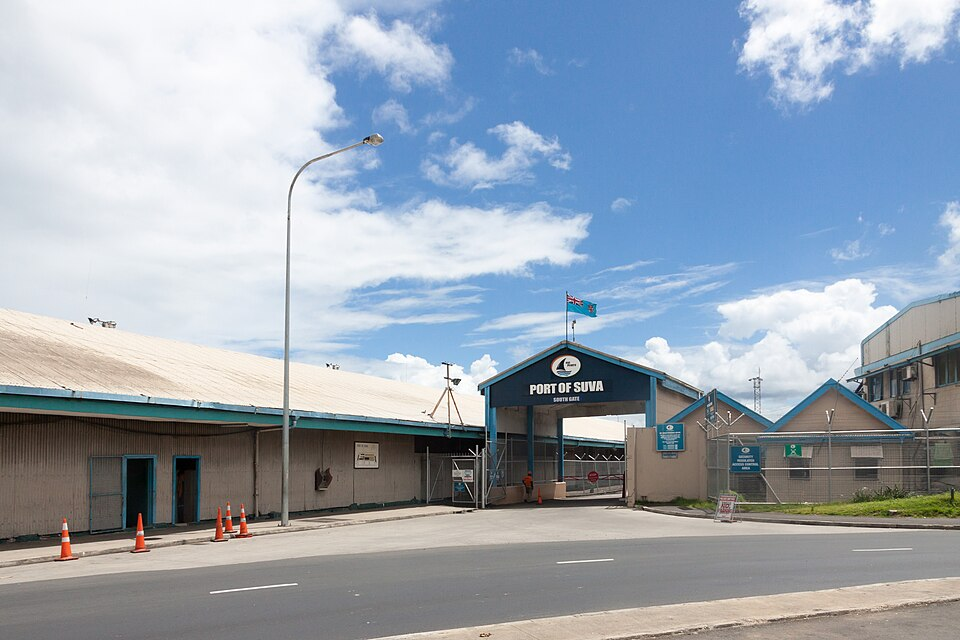

一声谢谢：斐济患者用中文感谢医生
在斐济，一名患者在“丝路方舟”号上接受直肠癌手术后，用不太流利的中文反复说：“谢谢中国医生！”

2025年9月5日 自泉州启航
经瑙鲁、斐济、巴西、智利等国
2026年4月26日 返抵三亚
234天
“丝路方舟”号医院船首次出国执行医疗援助与交流任务。医疗队在到访港口的船上接诊、手术，也到岸上巡诊。
航次规模
全航次接诊2.6万余人次，实施手术操作2724例。
统计涵盖“和谐使命-2025”全航次。
从人类命运共同体的视角看，船上接诊和岸上巡诊都回应了同一个问题：居民能不能就近看病。
2026年4月26日，医院船完成234天任务返回三亚。报道留下了这句道谢，未交代患者的长期随访情况。
